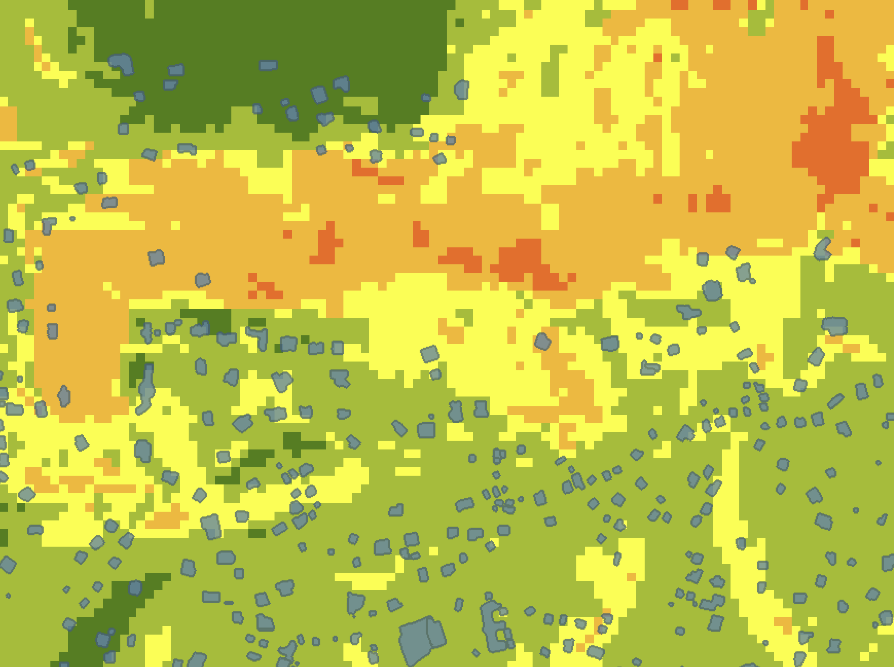
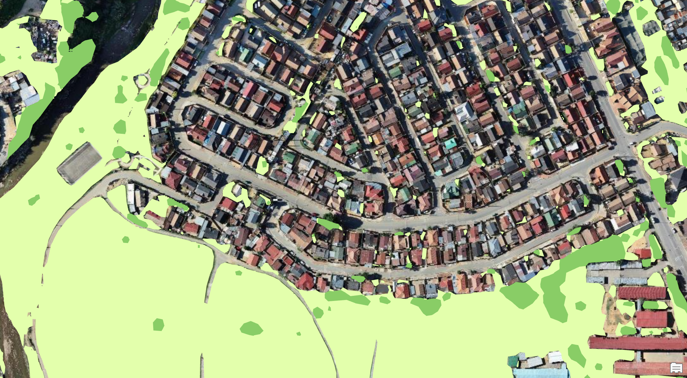
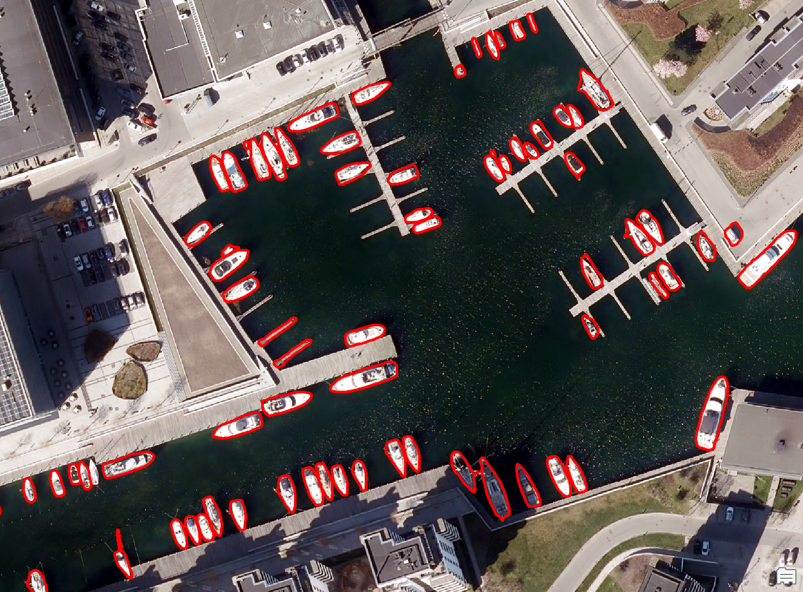

Focus 01
Applied GeoAI workflows
Object detection, transfer learning, and land cover extraction using pretrained and adapted deep learning models.
Sophia (Zahra) Chehreghan
Spatial Planner | GIS | GeoAI | ArcGIS Pro | ArcGIS Online
This portfolio complements my CV by highlighting hands-on GeoAI and GIS workflows in ArcGIS Pro and ArcGIS Online. The focus is on technical process, software use, model application, post-processing, raster analysis, and web-based result presentation.
Each project page is designed to show workflow, software steps, technical choices, and outputs efficiently. The goal is not to retell the full project story, but to make software capability and applied analysis visible at a glance.
Object detection, transfer learning, and land cover extraction using pretrained and adapted deep learning models.
Confidence filtering, threshold decisions, vector cleanup, raster-to-feature conversion, and result refinement.
Raster-based suitability workflows, overlay analysis, class extraction, and exposure mapping for decision support.
Project pages and web app presentation to communicate results clearly beyond the ArcGIS working environment.
The project order below prioritizes technical signal and workflow depth, while keeping the portfolio easy to scan for recruiters and GIS hiring teams.

Fine-tuning a pretrained deep learning model to improve building footprint extraction in new imagery conditions.

Combined AI-based building extraction with raster-based landslide susceptibility analysis to identify exposed infrastructure.

Generated land cover classes from high-resolution imagery and used the results for class extraction and green space analysis.

Used text-prompt object detection in aerial imagery and improved raw outputs through filtering and result cleanup.

Applied a pretrained object detection model to extract palm tree locations from aerial imagery in ArcGIS Pro.